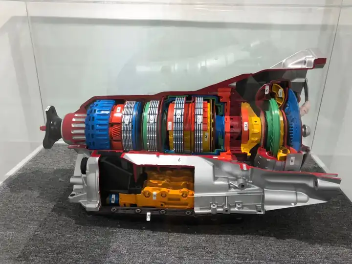

Meet Jacky, your gearbox specialist
Gearbox specialist and consultant in Singapore. Jacky diagnoses, inspects and road-tests every car himself.

The gearbox specialist you deal with from start to finish
Jacky diagnoses and tests your gearbox himself, explains the fault in plain words, and gives you the price before any work starts. The repair is done by an experienced workshop team; Jacky inspects the work and does the final road test before he hands the car back to you.
You can also come to Jacky for advice, for example a second opinion on a gearbox quote, or whether a repair is worth doing on your car.
How Jacky works
- 1
Diagnosis and testing
Jacky reads the fault codes, tests the gearbox and finds the actual cause.
- 2
A clear quote
He explains the fault and the price before any work starts. You decide.
- 3
The repair
An experienced workshop team, with over 15 years of combined gearbox experience, carries out the repair or overhaul. Jacky inspects the work.
- 4
Final test and handover
Jacky road-tests the car himself before he hands it back to you.
What Jacky believes
Every customer should get the most direct and accurate gearbox solution for their specific problem, to save them time and money, and should know exactly who is responsible for their car.

Why customers choose Jacky
- Specialist in auto transmission repair & overhaul of all types of vehicles
- Jacky diagnoses, inspects and road-tests every car himself
- An experienced, well-trained workshop team for the repair work
- Competitive and direct pricing for transmission issues
- Standard 6-month warranty on repairs
- High quality parts and Automatic Transmission Fluid (ATF)
- Comfortable waiting lounge with a clear view of your car
What customers say about Jacky
“… Arranged an appointment with Jacky and drove my BMW 5 series to let him check. Workshop was impressive from the setup …”
Ulysses Wang · BMW 5 Series
“… I was initially very worried about the repair cost when my Audi A4 gearbox was diagnosed to be faulty. But Jacky was very patient and professional in explaining to me the overhaul process and the quoted price was below what I have expected. My car was ready after 3 days and was given a 6 months warranty as well. I would definitely recommend my friends to them for any gearbox issues.”
Alvin Lee · Audi A4
Frequently asked questions
How much does a gearbox repair cost in Singapore?
How much is the diagnostic?
My car can’t move. Can you tow it?
Which car brands do you work on?
Is there a warranty after repair?
What are the signs my gearbox needs attention?
Where are your workshops and when are you open?
Our workshops in Woodlands and Jalan Lam Huat
Woodlands (Wave 9)
71 Woodlands Industrial Park E9, #01-25 Wave 9
Singapore 757048
- Mon – Fri
- 9:00am – 6:00pm
- Saturday
- 9:00am – 3:00pm
- Sun & PH
- Closed
Talk to Jacky
Call, WhatsApp or drop by either workshop.